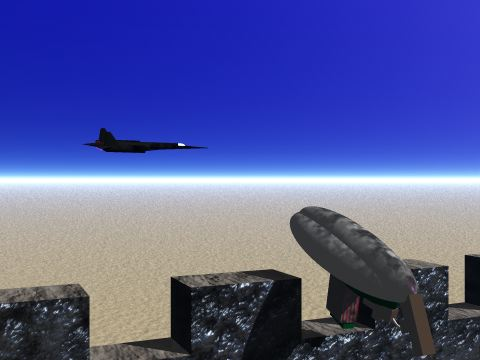
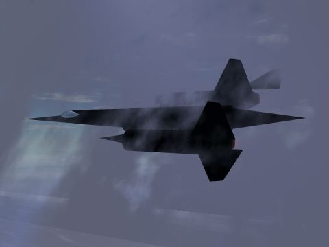

Bart and Homer's Future Meals (BHFM) IV
STAR WARS SERIES
(under construction)

|
Star Wars Moisture Farmers. This is the first in a really awesome series. Luke was a moisture farmer so I thought I would start here.

|
Welcome to Jabba's Palace, the biggest gangster alive... er... well, dead, really. Watch out for the monks!

|
Jabb's famed sail barge accompanied by two skiffs. Probably just returning from the Sarrlac.

|
"I just can't abide those Jawas. Disgusting creatures".

BLACKBIRD SERIES
|
 |
The Blackbird in flight - accompanied by the Marathon machine gun.
|
 |
Blackbird in the Mist - possibly the last of this series.